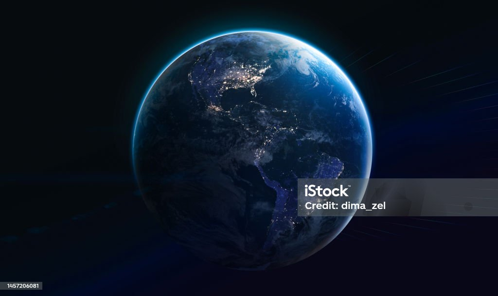

Земля
Земля — третья по удалённости от Солнца планета Солнечной системы и наша родная планета. Это единственное известное человечеству небесное тело, на котором существует жизнь. Земля образовалась примерно 4,54 миллиарда лет назад и с тех пор прошла долгий путь эволюции.
Около 71% поверхности Земли покрыто водой — это океаны, моря, реки и озёра. Именно наличие воды в жидком состоянии, а также атмосфера, защищающая от вредного излучения, создали уникальные условия для возникновения и развития жизни.
Земля обладает мощным магнитным полем, которое защищает нас от солнечного ветра и космических лучей. Атмосфера планеты состоит в основном из азота (78%) и кислорода (21%), которым мы дышим.
Наша планета обращается вокруг Солнца за 365,25 суток — этот период мы называем годом. Один оборот вокруг своей оси Земля совершает за 24 часа, что даёт нам смену дня и ночи.